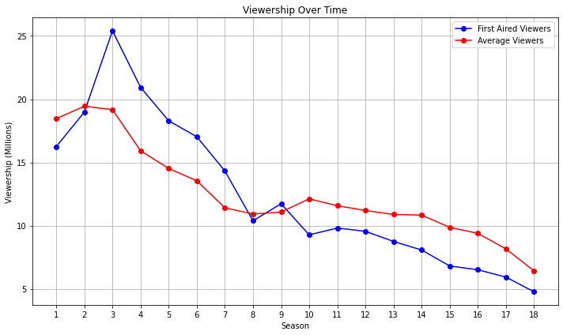
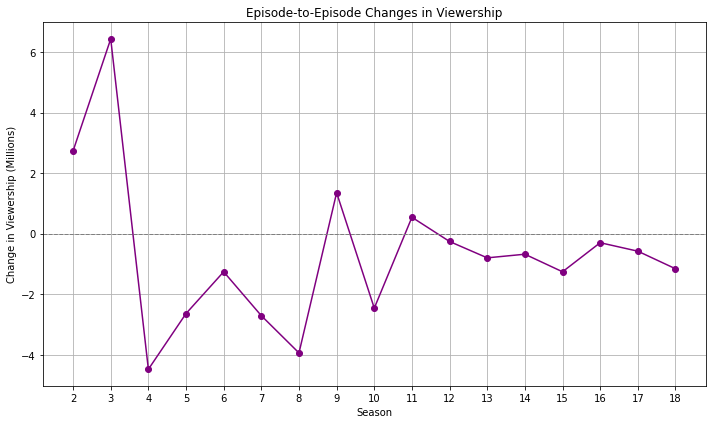

Code
Image(filename='C:\\Users\\lizan\\OneDrive\\Desktop\\grey_s_anatomy_wallpaper_by_cityinmotion_d1es43e-fullview.jpg')Grey’s Anatomy is a popular and long-running American medical drama television series. The show was created by Shonda Rhimes and premiered on March 27, 2005. Set in the fictional Grey Sloan Memorial Hospital, formerly known as Seattle Grace Hospital, it revolves around the personal and professional lives of a group of surgical interns, residents, and attending physicians.
The central character of the show is Dr. Meredith Grey, played by Ellen Pompeo, who serves as the narrator. Throughout the series, viewers follow Meredith’s journey as she navigates the challenges of her medical career and the complexities of her personal relationships.
Image(filename='C:\\Users\\lizan\\OneDrive\\Desktop\\grey_s_anatomy_wallpaper_by_cityinmotion_d1es43e-fullview.jpg')Source: https://www.deviantart.com/cityinmotion/art/Grey-s-Anatomy-Wallpaper-85292474
import os
import pandas as pd
import matplotlib.pyplot as plt
import numpy as np
from IPython.display import Image
# Set the path
file_path = "C:\\Users\\lizan\\OneDrive\\Desktop\\RR_quarto_data.xlsx"
# Read data from the source file
# Source: https://en.wikipedia.org
df = pd.read_excel(file_path)
# Preview data
df.head()# Summary of basic statistics on viewership
viewership_stats = df[['FirstAired_Viewers', 'LastAired_Viewers', 'Avg_viewers', 'Viewership_rank']].describe()
print("Summary of Basic Statistics on Viewership:")
print(viewership_stats)Summary of Basic Statistics on Viewership:
FirstAired_Viewers LastAired_Viewers Avg_viewers Viewership_rank
count 18.000000 18.000000 18.000000 18.000000
mean 12.377222 11.787778 12.494444 19.833333
std 5.877135 6.252615 3.688502 8.972179
min 4.770000 4.190000 6.420000 5.000000
25% 8.240000 7.680000 10.842500 12.750000
50% 10.095000 8.955000 11.305000 19.500000
75% 16.835000 16.872500 14.277500 26.750000
max 25.410000 22.570000 19.440000 34.000000# Graph of viewership over time
plt.figure(figsize=(10, 6))
plt.plot(df['Season'], df['FirstAired_Viewers'], marker='o', label='First Aired Viewers', color='blue')
plt.plot(df['Season'], df['Avg_viewers'], marker='o', label='Average Viewers', color='red')
plt.xlabel('Season')
plt.ylabel('Viewership (Millions)')
plt.title('Viewership Over Time')
plt.legend()
plt.grid(True)
plt.xticks(df['Season'])
plt.tight_layout()
plt.show()
The TV show is experiencing a noticeable decline in audience interest.
# Graph of season-to-season changes in viewership
episode_changes = np.diff(df['FirstAired_Viewers'])
seasons = df['Season'][1:] # Exclude the first season as there's no previous season to compare with
plt.figure(figsize=(10, 6))
plt.plot(seasons, episode_changes, marker='o', color='purple')
plt.axhline(0, color='gray', linestyle='dashed', linewidth=1)
plt.xlabel('Season')
plt.ylabel('Change in Viewership (Millions)')
plt.title('Episode-to-Episode Changes in Viewership')
plt.grid(True)
plt.xticks(seasons)
plt.tight_layout()
plt.show()
The most significant decline in viewership occurred during the 4th season.
# Changes in viewership
max_decrease_season1to5 = np.min(episode_changes[:5])
max_decrease_season3to5 = np.min(episode_changes[2:5])
max_increase_season16to17 = np.max(episode_changes[15:17])
print(f"The viewership decreased by {max_decrease_season1to5:.2f} million between seasons 1 and 5.")
print(f"The viewership decreased by {max_decrease_season3to5:.2f} million between seasons 3 and 5.")
print(f"The viewership increased by {max_increase_season16to17:.2f} million between seasons 16 and 17.")The viewership decreased by -4.48 million between seasons 1 and 5.
The viewership decreased by -4.48 million between seasons 3 and 5.
The viewership increased by -0.58 million between seasons 16 and 17.Overall, the results indicate that the show experienced a significant viewership decline between the early seasons (1 to 5) and a slight decrease in viewership between seasons 16 and 17. These findings may prompt the show’s creators and producers to analyze the factors that contributed to these declines, such as plot developments, competition from other shows, or changes in marketing strategies. By understanding the reasons behind the viewership changes, they can make informed decisions to address any issues and improve the show’s appeal to the audience.